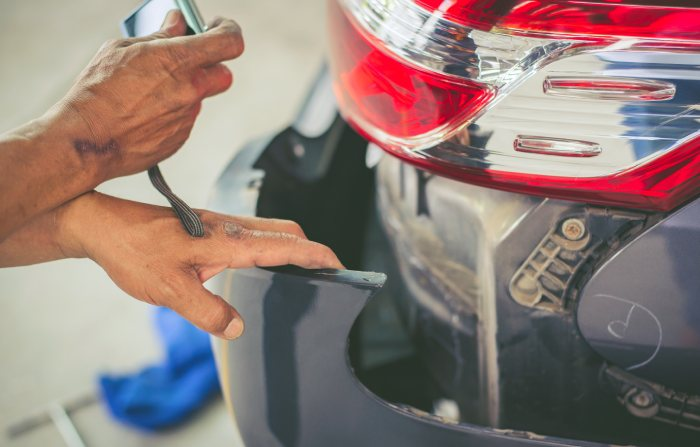
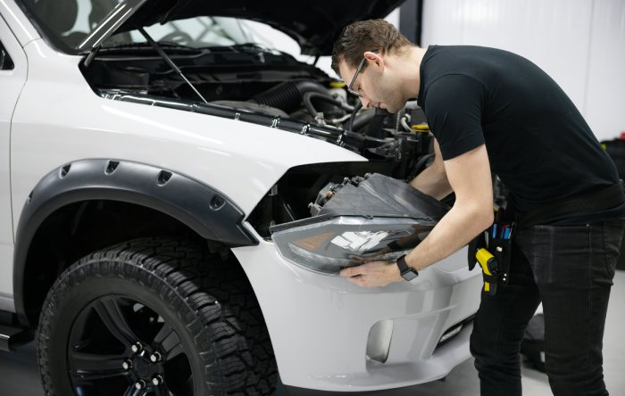

Minor dents and dings can make even a well-maintained vehicle look worn out. Whether your car has suffered a parking lot mishap, a door ding, or minor hail damage, repairing the affected area can help restore its appearance without an expensive body shop visit. For drivers in Spring, Texas, paintless dent repair (PDR) offers a practical solution that preserves the vehicle’s original paint while addressing many common types of damage.
Unlike conventional dent repair, which may require sanding, fillers, and repainting, PDR uses specialized tools and controlled pressure to reshape damaged metal. When the paint remains intact and the dent is suitable for the process, this method can save time, reduce repair costs, and maintain your vehicle’s original finish. Understanding its advantages can help you decide whether paintless dent repair is the right choice for your car. Visit this site for more details about paintless dent repair.
Paintless dent repair is a specialized technique that removes minor dents from a vehicle’s body without disturbing the factory paint. Technicians carefully access the damaged panel and use precision tools to massage the metal back toward its original shape.
The process begins with a thorough inspection of the damaged area. A technician evaluates the dent’s depth, size, location, and the condition of the paint to determine whether PDR is appropriate.
Depending on the panel and damage, the technician may use rods, specialized tools, or glue-pulling equipment to gradually reshape the metal. Proper lighting helps reveal small imperfections, allowing for precise adjustments. The goal is to restore the panel’s original contours while keeping the existing paint intact.
Paintless dent repair is often suitable for door dings, minor creases, small dents, and many hail-related dents. However, dents with sharp creases, severely stretched metal, or cracked paint may require conventional bodywork or another repair method. A professional assessment helps determine the most appropriate solution.

Choosing the right repair method involves more than making a dent disappear. PDR offers several advantages for vehicle owners who want an effective repair without unnecessary work.
One of the biggest benefits of PDR is its ability to preserve the factory paint finish. Traditional repairs may involve sanding, body filler, primer, and repainting. These additional steps are generally unnecessary with PDR when the damage qualifies.
Keeping the original finish can help maintain a consistent appearance across the vehicle’s panels. It also avoids potential color-matching differences that sometimes occur during repainting.
Conventional bodywork can become expensive when labor, paint, materials, and preparation are involved. Since PDR often requires fewer materials and less labor, it can be a more affordable option for eligible damage.
The final cost depends on factors such as dent size, depth, accessibility, and the number of affected panels. Obtaining an estimate from an experienced technician helps you understand the expected expense before authorizing repairs.

Many minor dents can be repaired faster with PDR than with traditional bodywork. Because the process typically avoids painting and drying time, some repairs may be completed within a few hours.
This can be especially convenient for busy Spring residents who depend on their vehicles for commuting, errands, and family responsibilities. However, extensive hail damage or multiple complex dents may require additional time.
A vehicle with visible dents may appear poorly maintained, even when it runs perfectly. Removing minor damage can improve its overall presentation and make it more appealing to potential buyers.
Although PDR cannot guarantee a higher resale price, preserving the original paint and correcting visible imperfections may support your vehicle’s overall condition when it is time to sell or trade it in.
Selecting a qualified technician is essential for achieving smooth, natural-looking results. Look for a repair professional with experience handling your particular type of damage, appropriate tools, and clear communication about the repair process.
Before scheduling service, consider these important factors:
A trustworthy technician should explain the available options rather than promise perfect results before inspecting the damage.
PDR is an excellent option when the paint is intact and the metal can be reshaped safely. However, extensive structural damage, peeling paint, or severely creased panels may require alternative repairs. The best approach depends on the vehicle, the damaged panel, and the technician’s assessment.